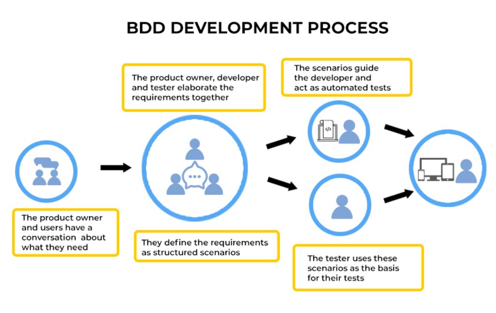

Behavior-driven development ehk BDD
Käitumispõhine tarkvaraarendus on määratletud kui protsess,
mis keskendub kasutajate nõudmistele ja ootustele,
hõlbustades koostööd arendajate, testijate ja projektijuhtide vahel.

Head:
Tõhustatud koostöö: BDD edendab koostööd ettevõtete sidusrühmade, arendajate ja testijate vahel, kasutades nõuete kirjeldamiseks ühist keelt.
See soodustab meeskonnaliikmete paremat mõistmist ja joondamist.
Selgemad nõuded: stsenaariumide kirjutamine lihtsas keeles kornišoni süntaksi abil aitab selgitada nõudeid ja ootusi.
See vähendab ebaselgust ja tagab, et kõigil on soovitud käitumisest ühine arusaam.
Keskenduge kasutaja käitumisele: BDD rõhutab süsteemi käitumist kasutaja vaatenurgast.
Keskendudes kasutajate lugudele ja stsenaariumidele, tagab BDD, et arendustööd on kooskõlas kasutajate vajaduste ja prioriteetidega.
Varajane probleemide tuvastamine: BDD julgustab enne rakendamist teste kirjutama, võimaldades meeskondadel tuvastada võimalikud probleemid arendusprotsessi varases etapis.
See toob kaasa kiiremad tagasisideahelad ja vähendab hiljem defektide parandamise kulusid.
Automatiseeritud testimine: BDD stsenaariume saab automatiseerida, kasutades selliseid tööriistu nagu Kurk või SpecFlow.
Automatiseeritud testid annavad kiiret ja usaldusväärset tagasisidet rakenduse käitumise kohta, võimaldades meeskondadel kiiresti tuvastada regressioone ja tagada pidev kvaliteet.
Täiustatud dokumentatsioon: BDD stsenaariumid toimivad süsteemi käitumise käivitatava dokumentatsioonina.
See dokumentatsioon on ajakohane, kuna teste viiakse regulaarselt läbi, pakkudes tarkvara elavat spetsifikatsiooni.
Parem koodikvaliteet: BDD julgustab kirjutama testitavat ja modulaarset koodi, mis järgib stsenaariumides kirjeldatud käitumist.
See toob kaasa paremini kavandatud tarkvara, millel on vähem defekte ja lihtsam hooldus.
 Vead:
Esialgne õppimiskõver: BDD kasutuselevõtt nõuab meeskondadelt uute raamistike, tööriistade ja metoodikate õppimist,
mis võib esialgu arendusprotsessi aeglustada, kui meeskonnaliikmed tutvuvad uue lähenemisviisiga.
Aeganõudev protsess: funktsioonifailide kirjutamine, stsenaariumide määratlemine ja etapimääratluste haldamine võib olla aeganõudev,
eriti suurte ja keerukate projektide puhul, põhjustades võimalikke viivitusi tarnimisel.
Sõltuvus sidusrühmade kaasamisest: BDD tugineb suuresti sidusrühmade, sealhulgas ärianalüütikute, arendajate, testijate ja tooteomanike vahelisele koostööle.
Sidusrühmade aktiivse osalemise puudumine võib BDD tõhusust vähendada.
Keerukate stsenaariumide raskused: BDD paistab silma lihtsate stsenaariumide käitumise jäädvustamisega, kuid võib olla raske käsitleda väga keerulisi stsenaariume või servajuhtumeid,
mis põhjustab testide automatiseerimise ebaselgust või ebatõhusust.
Hoolduse üldkulud: projekti arenedes võib olemasolevate funktsioonifailide ja etapimääratluste haldamine ja värskendamine,
et kajastada nõuete või funktsioonide muudatusi, muutuda keeruliseks ja ressursimahukaks.
Potentsiaalne üleprojekteerimine: Ilma nõuetekohase juhendamise ja järelevalveta võivad meeskonnad oma BDD-teste üle projekteerida,
lisades tarbetut keerukust ja vähendades pikas perspektiivis hooldatavust.
Tööriistade piirangud: BDD tõhusus sõltub suuresti tugivahendite ja raamistike kättesaadavusest ja sobivusest.
Piiratud tööriistavalikud või ühilduvusprobleemid olemasolevate süsteemidega võivad takistada kasutuselevõttu ja rakendamist.
Vead:
Esialgne õppimiskõver: BDD kasutuselevõtt nõuab meeskondadelt uute raamistike, tööriistade ja metoodikate õppimist,
mis võib esialgu arendusprotsessi aeglustada, kui meeskonnaliikmed tutvuvad uue lähenemisviisiga.
Aeganõudev protsess: funktsioonifailide kirjutamine, stsenaariumide määratlemine ja etapimääratluste haldamine võib olla aeganõudev,
eriti suurte ja keerukate projektide puhul, põhjustades võimalikke viivitusi tarnimisel.
Sõltuvus sidusrühmade kaasamisest: BDD tugineb suuresti sidusrühmade, sealhulgas ärianalüütikute, arendajate, testijate ja tooteomanike vahelisele koostööle.
Sidusrühmade aktiivse osalemise puudumine võib BDD tõhusust vähendada.
Keerukate stsenaariumide raskused: BDD paistab silma lihtsate stsenaariumide käitumise jäädvustamisega, kuid võib olla raske käsitleda väga keerulisi stsenaariume või servajuhtumeid,
mis põhjustab testide automatiseerimise ebaselgust või ebatõhusust.
Hoolduse üldkulud: projekti arenedes võib olemasolevate funktsioonifailide ja etapimääratluste haldamine ja värskendamine,
et kajastada nõuete või funktsioonide muudatusi, muutuda keeruliseks ja ressursimahukaks.
Potentsiaalne üleprojekteerimine: Ilma nõuetekohase juhendamise ja järelevalveta võivad meeskonnad oma BDD-teste üle projekteerida,
lisades tarbetut keerukust ja vähendades pikas perspektiivis hooldatavust.
Tööriistade piirangud: BDD tõhusus sõltub suuresti tugivahendite ja raamistike kättesaadavusest ja sobivusest.
Piiratud tööriistavalikud või ühilduvusprobleemid olemasolevate süsteemidega võivad takistada kasutuselevõttu ja rakendamist.
 Koduleht
Ainemapp Koduleht
Kasutatud materjal
Koduleht
Ainemapp Koduleht
Kasutatud materjal